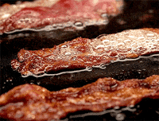

BACON!!

Description
Baking bacon at 350 degrees F is the way to get crisp bacon without having to constantly turn it,
watch over it, or get burnt by splatters of grease.It "fries" up flat and doesn't curl, which
looks great beside a breakfast plate of eggs,and makes BLT sandwiches much easier. Very nice
when feeding a family or crowd.
Ingredients
Steps
- Preheat the oven to 350 degrees F (175 degrees C). Line a baking sheet with aluminum foil.
- Arrange the bacon in a single layer on the prepared sheet with the edges touching or
lightly overlapping.
- Bake in the preheated oven to desired degree of doneness, 10 to 15 minutes. Remove
bacon from the baking sheet with tongs or a fork, and drain on a paper towel-lined plate.
Back to top